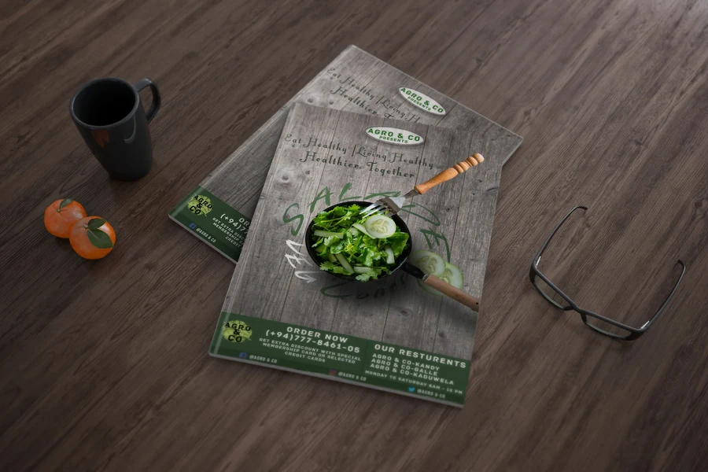
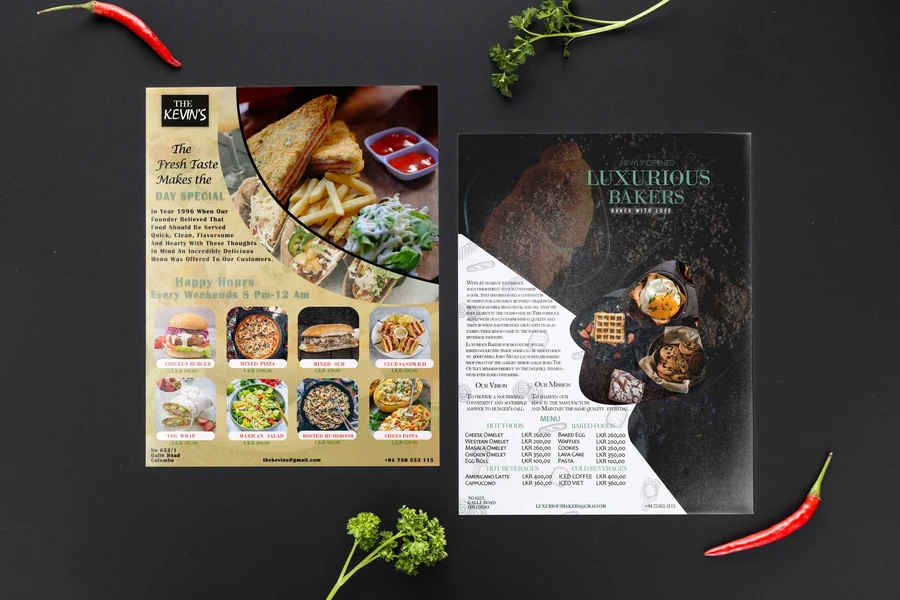
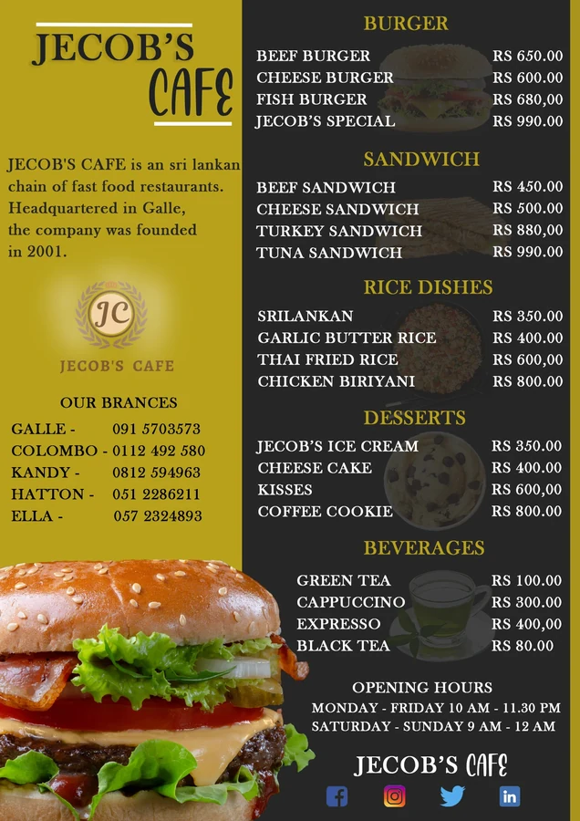
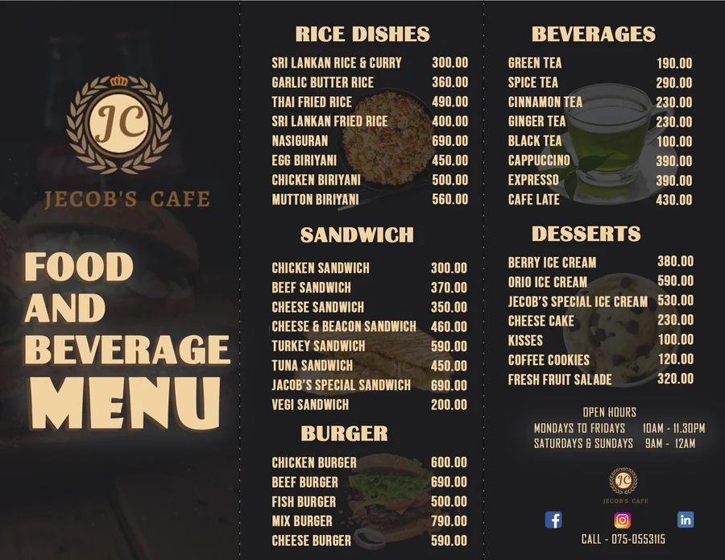
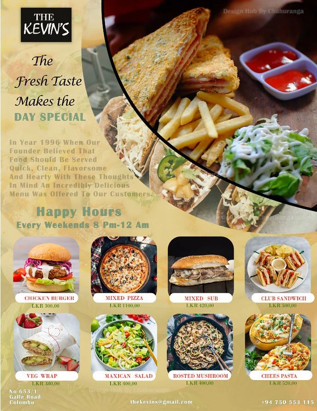
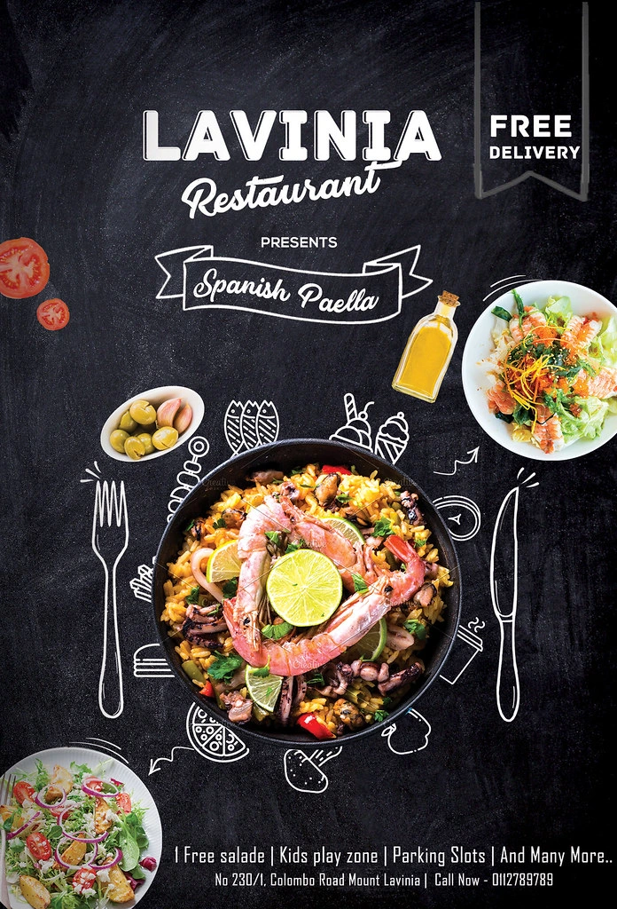
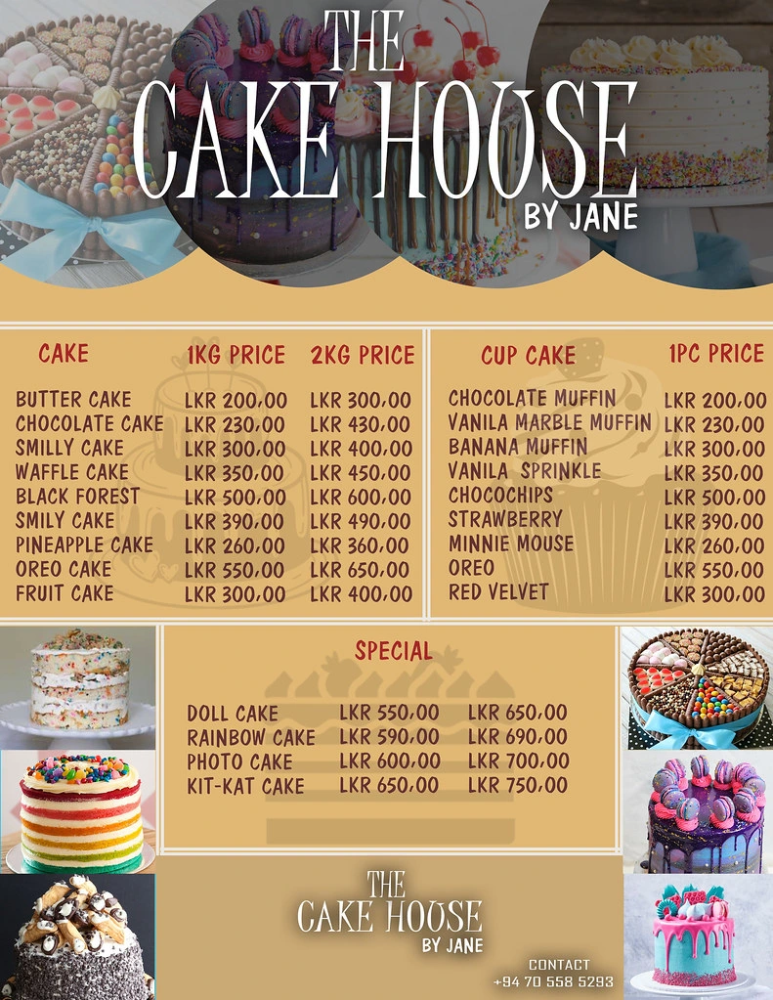
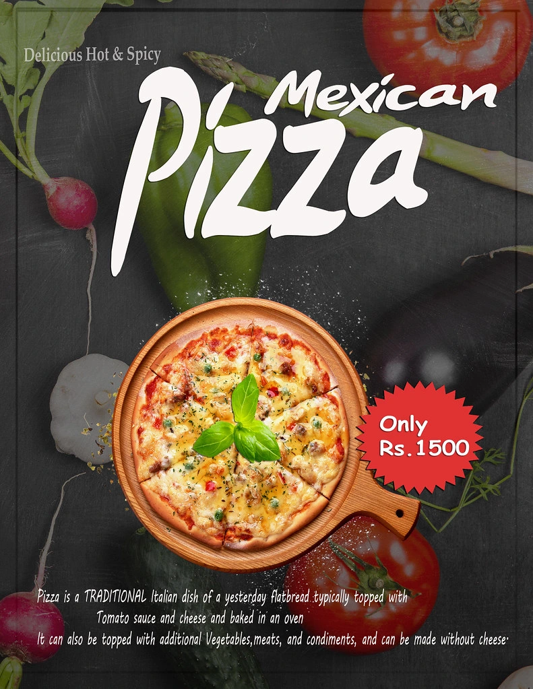

GRAPHIC DESIGN / 01
A taste of good design
Menus that bring food, typography, and a clear reading order to the table.
Menu design · Print layoutTHE PROJECT
Restaurant menu collection
A collection of restaurant and café menu designs, presented as flat layouts and mockups. Each piece brings together food imagery, pricing, and section headings so the reader can move comfortably from one choice to the next.
MY DESIGN APPROACH
Warm food photography and contrasting backgrounds give the dishes a strong presence. Grouped categories, repeated type styles, and consistent price alignment create a reading rhythm across the different formats.
DESIGN OBJECTIVE
Present food choices, prices and offers in an inviting layout that customers can scan.
Objective interpreted from the artwork; original customer brief not supplied.
COLOUR & CONTRAST
Dark grounds increase separation around bright food photography; cream and gold-toned variants create a warmer treatment. Repeated accent colours connect headings and prices.








